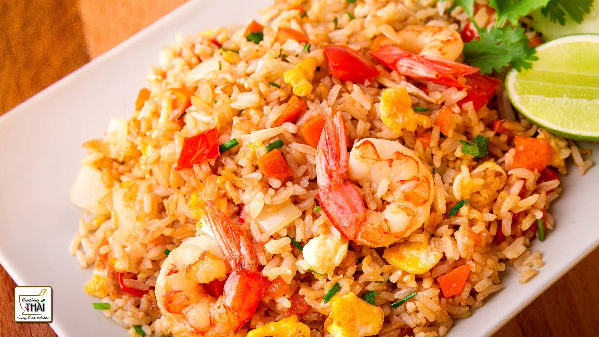
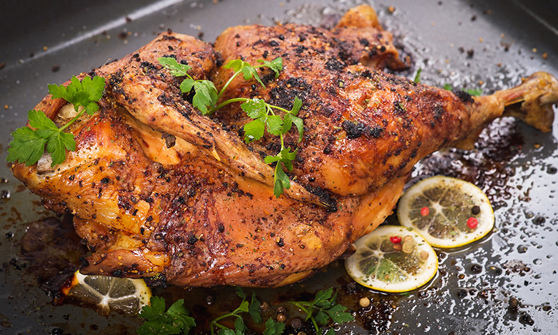

Arroz con Camarones
18 de Agosto de 2017
Ingredientes:
2 libras de camarones, lavados y sin tripita, pero sin pelar.
2 cucharaditas de comino molido.
4 dientes de ajo, machacados.
4 dientes de ajo, picaditos.
2 cucharadas de aceite.
2 tazas de arroz (sin cocer).
3 cucharadas de mantequilla.
1 cebolla colorada, picada en cuadritos.
1 pimiento, picado en cuadritos.
2 tomates, pelados y sin pepas, picados en cuadritos.
3 cucharadas de perejil picado finamente (y más para añadir al final).
1 cucharadita de achiote molido.
½ taza de vino blanco.
Sal y pimienta al gusto.
Preparación:
Los camarones se sazonan con sal, pimienta, comino y ajo, se los hierve sin pelar porque las cascaras contienen mucho del sabor del camaron, y se usa el agua en el que cocinan para luego cocinar el arroz, dándole así una infusión de sabor de camaron al arroz. Se prepara un refrito o sofrito con cebolla, pimiento, tomates, perejil, comino, achiote y vino blanco que se mezcla con el arroz y el camaron. El arroz con camarones se sirve con aguacates, curtido de cebolla, tomate, y aji. También se puede servir acompañado de platanos maduros fritos o de patacones.

Creo que este plato esta exccelente.

Umm que rico, me gusta la comida de mar.
Creo que este plato esta exccelente.
Pollo a la cerveza con chía, un almuerzo delicioso y rico en proteínas
7 de Marzo de 2017
Ingredientes:
2 muslos de pollo (muslo y contramuslo).
1 cebolla mediana.
1 diente de ajo.
Aceite de oliva virgen extra.
1 zanahoria.
1 cerveza negra (también puede ser rubia).
Una pizca de sal.
1 cucharadita de tomillo.
1 cucharadita de chía.
Preparación:
-Pon a calentar la olla programable en el programa de arroz con dos cucharadas de aceite de oliva virgen extra. -Pon en la olla con el aceite ya caliente la cebolla, el diente de ajo y la zanahoria (todo sin piel, pero entero) y dora un poco. -Añade los muslos de pollo por la parte que tiene la piel el contramuslo y dora también. -Agrega sal al gusto, una cucharadita de tomillo y dale un par de vueltas. -Abre la cerveza y échala en la olla. -Tapa la olla y selecciona el programa de carne. -Cuando pite la olla, abre la pesa para que salga la presión. -Pon en un recipiente para horno los muslos de pollo, la cebolla y la zanahoria con un poco de caldo de la cocción. -Pon el horno en modo grill durante 15 minutos. -Coloca el resto de caldo en una sartén al fuego fuerte para que se reduzca. -Añade la chía y deja que se reduzca la salsa. -El pollo a la cerveza con chía se puede servir con un poco de arroz con curry y sal, que se coloca junto a los muslos de pollo.
Creo que este plato esta exccelente.
Umm que rico, me gusta la comida de mar.
Creo que este plato esta exccelente.